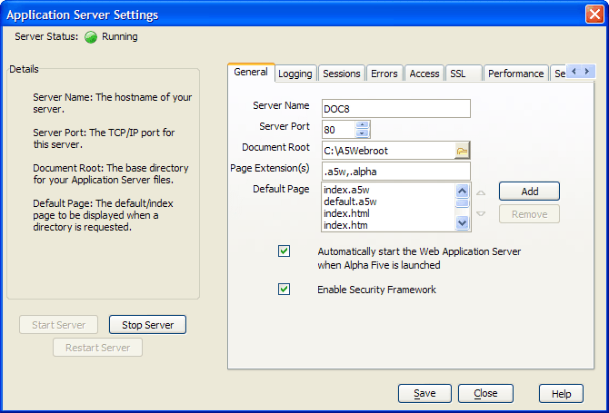

Configuring the Application Server
The Application Server Control Panel
Before you start creating and running A5W pages, you must install and configure the Application Server.
Select Tools > Application Server to display the Application Server Control Panel.
The General tab has a Document Root field. The Application Server only publishes files in this folder and in its sub-folders.

In general, the pages that you publish to the web will have the following file specification: DocumentRoot \ YourDatabaseName \ YourProjectName \ YourPageName.A5W. The default value for DocumentRoot is "A5webroot" on the same drive as your Alpha Five installation.
Alpha Five Version 6 stores A5W pages that you are developing in a sub-folder under your database folder. Your project folder will be named: ...\ YourDatabaseName \ YourDatabaseName.WebProjects\ YourProjectName.WebProject\
You will store A5W pages, images, web components, images, and other files that you add to the project in this folder.
When you publish a page the "Local Webroot", Alpha Five will copy the page and its components to the DocumentRoot.
See Also